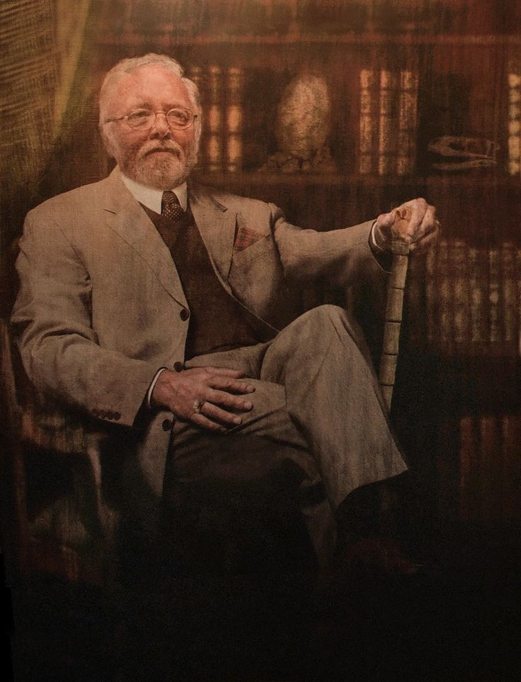
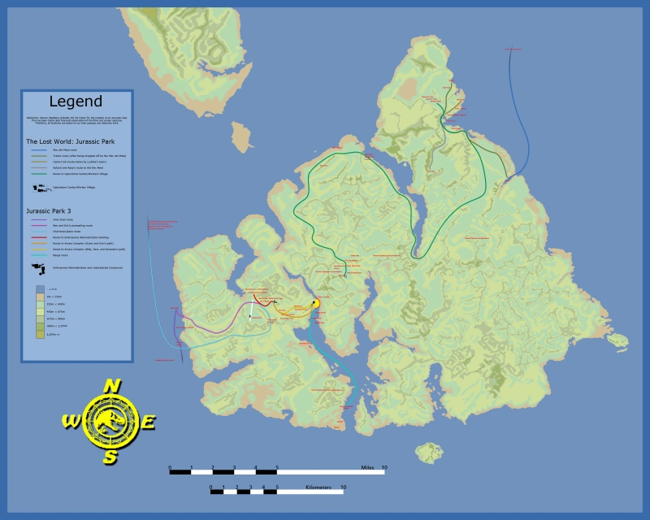
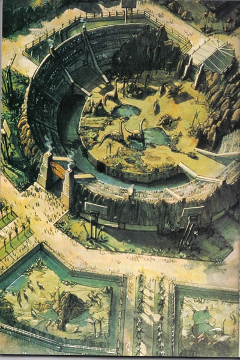

Historia de InGen

John Parker Hammond nació el 14 de marzo de 1923 en Escocia, su primera creación fue un circo de pulgas en Petticoat Lane, Inglaterra, también construyo un zoológico en Kenia pero el tenía algo más en mente. John Hammond rápidamente se construyo una reputación de ser un inversionista misterioso, multimillonario y jovial científico loco. En 1979 John Hammond y Norman Atherton, un genetista de Standford, fundaron International Genetic Technologies Inc. Con Fondos aportados por Hamaguri y Densaka, dos empresas de inversión japonesas. Debido al gran éxito de InGen, Hammond crearía su propia fundación, llamada Fundación Hammond. La fundación donará fondos a muchos sitios de excavacion y para comprar productos como el ámbar y cascaras de huevos sintéticos.

Su sede esta en Palo Alto. En los primeros años Norman Atherton fue el jefe del departamento de genética. InGen originalmente manejaba ingeniería genética normal, como crear elefantes miniatura, pero luego decidió crear algo mucho mas grande. Más allá de todo el gran éxito financiero de Ingen, Hammond tenía una gran idea, pero en el año de 1980 su amigo y cofundador Norman Atherton fallece. Debido al fallecimiento de Atherton, los directivos de InGen nombraron al sobrino de Hammond, Peter Ludlow como el nuevo vicepresidente.Cuando Norman Atherton murió, su discípulo Henry Wu se convirtió en el nuevo jefe del departamento de genética. Wu fue quien diseño el procedimiento para traer dinosaurios a la vida.
El gran sueño de Hammond era la idea de tratar de clonar el ADN de dinosaurios, Hammond quería revolucionar el entretenimiento de los parques temáticos y zoológicos, queria crear una nueva atracción, una atracción jamas antes vista que sorprendiera a los niños y adultos, la idea era crear un nuevo zoológico con dinosaurios. Para crear una gran atracción era necesario crear un lugar en donde producirlo, tenía que ser altamente secreto para los gobiernos y el público, Hammond necesitaba un lugar donde producir el ADN y sus investigaciones en total secreto. En 1980 cuando Hammond estaba de visita en Costa Rica para la preservación de zonas tropicales, se percató de una isla en el sur de Puerto Córtes, esta isla pertenece a un conjunto de 5 islas el cual se conocen como Las Cinco Muertes, esta isla en específico, se llama Isla Sorna.

InGen había encontrado el perfecto lugar para comenzar con la clonación de dinosaurios. La Isla Sorna fue adquirida por InGen en 1981, la isla tendría la clave de "Sitio B". Después de comprar la isla InGen comenzó a construir grandes laboratorios y otros edificios de investigación, los dos de los siguientes son importantes, El Complejo de Ingen y la Villa de los Trabajadores. El Complejo de InGen es el principal edificio en toda la isla y el más importante. El complejo tiene 3 áreas las cuales son: Los embriones, Administración y Laboratorio. En esta instalación es donde se clonan los dinosaurios. La Villa de los Trabajadores es una pequeña instalación para dar hospedaje a los trabajadores y científicos en la isla. Teniendo todo el equipo y las herramientas necesarias se comenzaría el proceso de extracción de ADN. La extracción del ADN, especialmente del ámbar, tardo 11 meses. El doctor Henry Wu propuso usar ADN de rana para acelerar el proceso de clonación, pero Laura Sorkin no estaba de acuerdo con el procedimiento. Un día, a las 3 de la mañana la primera cadena de ADN de dinosaurio apareció por primera vez en el monitor de Dennis Nedry. La clonación de ADN fue todo un éxito.

Gracias al procedimiento del doctor Henry Wu, InGen ya contaba con 13 patentes, mientras que todo esto ocurría en el Sitio B, Hammond comenzó a construir un anfiteatro el cual llamo Jurassic Park San Diego. Antes de que los dinosaurios estuvieran listos para ser mostrados ante el mundo, Hammond ya comenzaba a construir el anfiteatro. El anfiteatro tendría las siguientes características: Un coliseo donde los dinosaurios saldrían por unas puertas a los costados, seis establos grandes con cercas electrificadas alrededor, cuando el anfiteatro estuviera listo, sería la mayor competencia del zoológico de San Diego. En noviembre de 1983, la primera fecundación de un óvulo artificial es realizada con éxito. A principios de 1985, el primer dinosaurio de InGen sería un Albertosaurio y de acuerdo con los análisis tenía peculiaridades en su comportamiento y una enfermedad crónica de la piel, pero estaba vivo. Los laboratorios del complejo de InGen se convirtieron en una fábrica en masa de dinosaurios. Hammond y su equipo de científicos se dieron cuenta de que los dinosaurios no prosperan en cautiverio, crecen débiles y dejan de comer, entonces se decidió ponerlos en libertad en el medio natural que InGen había construido. En 1987, los dinosaurios comienzan a tomar su tamaño completo, Hammond sabía que los dinosaurios necesitarían tener mucho más espacio para su desarrollo. Y así fue como en junio de 1987, Jurassic Park San Diego abriría sus puertas, convirtiéndose en el mejor parque de atracciones.